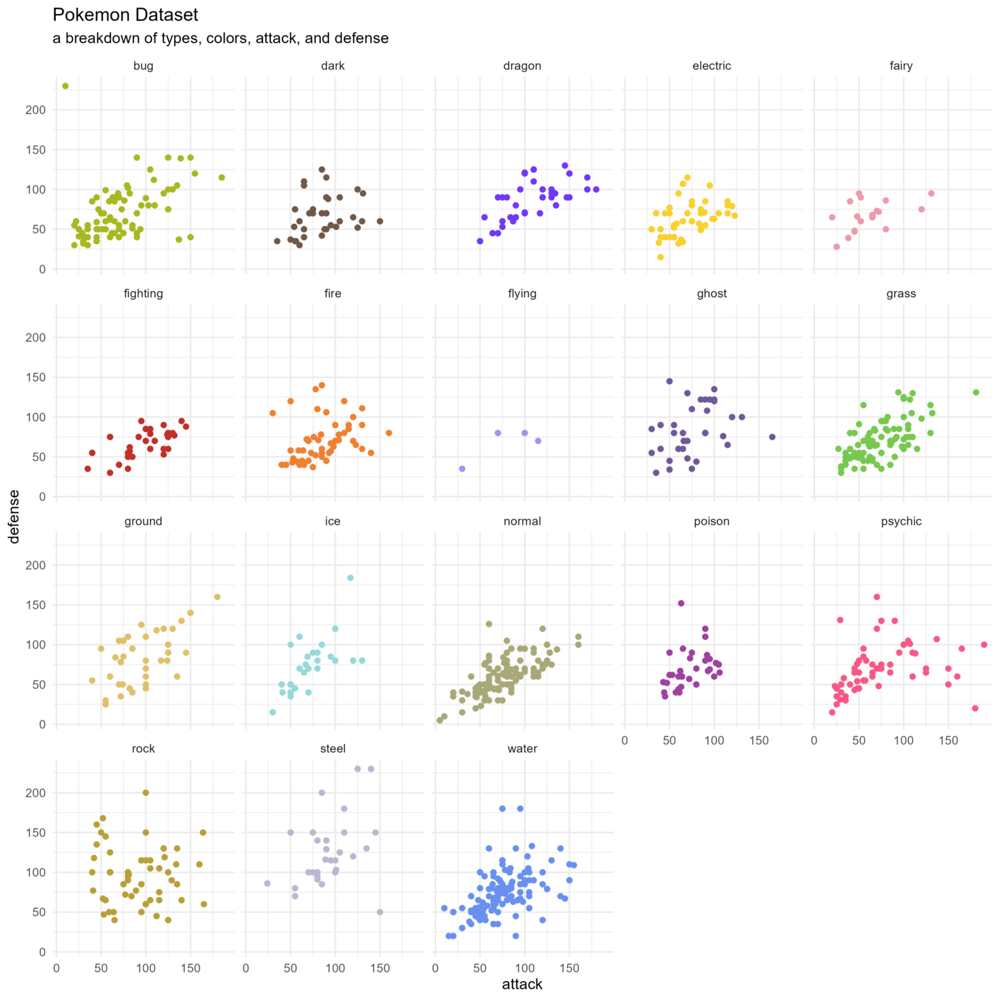
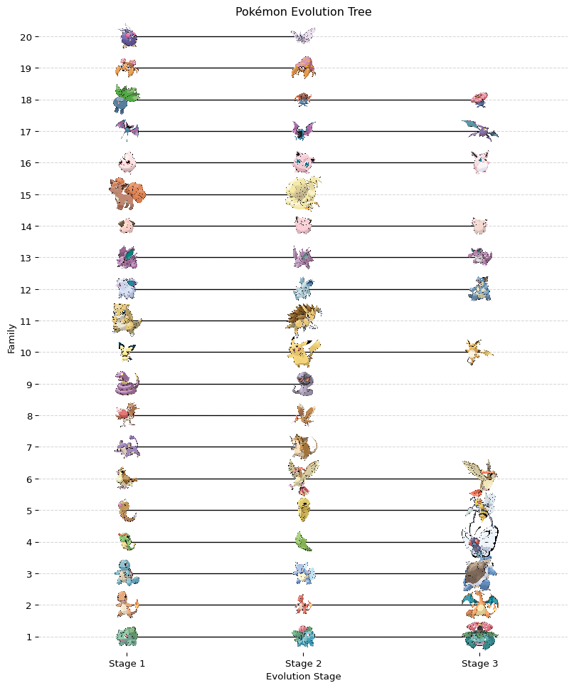

# import required libraries
import os
import PyDyTuesday
import pandas as pd
import requests
from tqdm import tqdm
# set working directory (only for line by line coding)
# comment out when rendering!
# os.getcwd()
# os.chdir(os.getcwd() + '/2025-04-01')Pydy Tuesday 2025-04-01
Data Source

Data Source: The dataset is sourced from pokemon, an R package which provides Pokemon information in both English and Brazilian Portuguese. The dataset contains 949 rows and 22 columns, including information such as the Pokemon’s name, ID, height, weight, stats, type, and more.
A supplemental data source on the evolution of Pokemon is sourced from Emil Hvitfeldt. The evolutiions.csv file created my Emil Hvitfeldt contains information on the evolutionary stage and family of each Pokemon.
Desired visualization
A plot of the evolutionary stages of each pokemon by family using the image of the pokemon as the points.
Set up
Download data
We can download the data using the PyDyTuesday library and specifying the date. This will load several files: - pokemon_df.csv: data file. - pokemon.png: logo sticker for PalmTraits database. - meta.yaml: meta data file with information about the data files and the curator.
The data dictionary is located here
# Download files from the week, which you can then read in locally
PyDyTuesday.get_date('2025-04-01')
df = pd.read_csv("pokemon_df.csv", encoding='latin-1')
print(df.head())meta.yaml downloaded
pokemon.png downloaded
pokemon_df.csv downloaded
readme.md downloaded
id pokemon species_id height weight base_experience type_1 type_2 \
0 1 bulbasaur 1 0.7 6.9 64 grass poison
1 2 ivysaur 2 1.0 13.0 142 grass poison
2 3 venusaur 3 2.0 100.0 236 grass poison
3 4 charmander 4 0.6 8.5 62 fire NaN
4 5 charmeleon 5 1.1 19.0 142 fire NaN
hp attack ... special_defense speed color_1 color_2 color_f \
0 45 49 ... 65 45 #78C850 #A040A0 #81A763
1 60 62 ... 80 60 #78C850 #A040A0 #81A763
2 80 82 ... 100 80 #78C850 #A040A0 #81A763
3 39 52 ... 50 65 #F08030 NaN NaN
4 58 64 ... 65 80 #F08030 NaN NaN
egg_group_1 egg_group_2 url_icon \
0 monster plant //archives.bulbagarden.net/media/upload/7/7b/0...
1 monster plant //archives.bulbagarden.net/media/upload/a/a0/0...
2 monster plant //archives.bulbagarden.net/media/upload/0/07/0...
3 monster dragon //archives.bulbagarden.net/media/upload/7/7d/0...
4 monster dragon //archives.bulbagarden.net/media/upload/b/be/0...
generation_id url_image
0 1.0 https://raw.githubusercontent.com/HybridShivam...
1 1.0 https://raw.githubusercontent.com/HybridShivam...
2 1.0 https://raw.githubusercontent.com/HybridShivam...
3 1.0 https://raw.githubusercontent.com/HybridShivam...
4 1.0 https://raw.githubusercontent.com/HybridShivam...
[5 rows x 22 columns]We can download Emil’s evolutionary data from his github here: https://gist.github.com/EmilHvitfeldt.
# URL to the raw CSV file
url = "https://gist.github.com/EmilHvitfeldt/b6773de4c00426c1c80e1b578cd50546/raw/evolutiions.csv"
# Read the CSV file directly from the URL
evol_df = pd.read_csv(url)
print(evol_df.head()) name stage family
0 bulbasaur 1 1
1 ivysaur 2 1
2 venusaur 3 1
3 charmander 1 2
4 charmeleon 2 2Data wrangling
We want to merge df with evol_df by Pokemon name so that we can get the url_image column.
df2 = df[['pokemon', 'url_image']]
df_merge = pd.merge(evol_df, df2, how = 'left', left_on='name', right_on='pokemon')
df_merge = df_merge[["name", "stage", "family", "url_image"]]
df_plot = df_merge[df_merge["family"] <= 20]
df_plot.head()| name | stage | family | url_image | |
|---|---|---|---|---|
| 0 | bulbasaur | 1 | 1 | https://raw.githubusercontent.com/HybridShivam... |
| 1 | ivysaur | 2 | 1 | https://raw.githubusercontent.com/HybridShivam... |
| 2 | venusaur | 3 | 1 | https://raw.githubusercontent.com/HybridShivam... |
| 3 | charmander | 1 | 2 | https://raw.githubusercontent.com/HybridShivam... |
| 4 | charmeleon | 2 | 2 | https://raw.githubusercontent.com/HybridShivam... |
Plot preparation
We want to use the image for each pokemon in the image_url column of the dataset, but first we need to download the images at each url. We will create a new directory to store the downloaded images in.
# Create folder for images
image_dir = "pokemon_images"
os.makedirs(image_dir, exist_ok=True)
# Function to download an image
def download_image(url, filename):
response = requests.get(url, stream=True)
if response.status_code == 200:
with open(filename, 'wb') as file:
for chunk in response.iter_content(1024):
file.write(chunk)
else:
print(f"Failed to download {url}")
# Loop through dataset and download images
for idx, row in tqdm(df_plot.iterrows(), total=len(df_plot)):
pokemon_name = row["name"]
image_url = row["url_image"]
image_path = os.path.join(image_dir, f"{pokemon_name}.png")
# Download image if it doesn't exist
if not os.path.exists(image_path):
download_image(image_url, image_path) 0%| | 0/53 [00:00<?, ?it/s]100%|██████████| 53/53 [00:00<00:00, 14507.48it/s]Now add a new column to plot_df with the path to each image.
# Define image directory
image_dir = "pokemon_images"
df_plot2 = df_plot.copy()
df_plot2["image_path"] = df_plot2["name"].apply(lambda x: os.path.join(image_dir, f"{x}.png"))
# Sort by family and stage for correct plotting
df_plot2 = df_plot2.sort_values(["family", "stage"])Evolution plot
import matplotlib.pyplot as plt
import matplotlib.image as mpimg
from matplotlib.offsetbox import OffsetImage, AnnotationBbox
import seaborn as sns
def add_image(ax, img_path, x, y, zoom=0.03):
""" Add Pokémon image at given (x, y) coordinates on the plot. """
if os.path.exists(img_path): # Check if image exists
img = mpimg.imread(img_path)
imagebox = OffsetImage(img, zoom=zoom)
ab = AnnotationBbox(imagebox, (x, y), frameon=False)
ax.add_artist(ab)
# Set the figure size (increase height for better spacing)
fig_height = max(8, len(df_plot["family"].unique()) * 0.6) # Adjust dynamically
fig, ax = plt.subplots(figsize=(10, fig_height))
# Plot evolution stages with scatter points (later replaced with images)
sns.scatterplot(data=df_plot, x="stage", y="family", ax=ax, color="white")
# Get unique families and map to y-axis positions
families = df_plot2["family"].unique()
family_positions = {family: i for i, family in enumerate(families)}
# Plot evolution tree
for _, row in df_plot2.iterrows():
x = row["stage"]
y = family_positions[row["family"]]
# Add Pokémon image at stage position
add_image(ax, row["image_path"], x, y)
# Draw evolution line (connect evolutions)
if row["stage"] > 1:
prev_stage = row["stage"] - 1
ax.plot([prev_stage, x], [y, y], "k-", lw=1)
# Set labels and formatting
ax.set_yticks(range(len(families)))
ax.set_yticklabels(families)
ax.set_xticks([1, 2, 3])
ax.set_xticklabels(["Stage 1", "Stage 2", "Stage 3"])
ax.set_xlabel("Evolution Stage")
ax.set_ylabel("Family")
ax.set_title("Pokémon Evolution Tree")
ax.set_xlim(0.5, 3.5)
ax.set_ylim(-0.5, len(families) - 0.5)
# Hide unnecessary plot elements
ax.spines["top"].set_visible(False)
ax.spines["right"].set_visible(False)
ax.spines["left"].set_visible(False)
ax.spines["bottom"].set_visible(False)
ax.yaxis.grid(True, linestyle="--", alpha=0.5)
plt.show() 